Archives Actus Cook - Niue
|
Pour consulter une archive, cliquez sur un lieu ci-dessous |
| 2009 Avant le départ |
| 2009 Caraïbes |
| 2009 Panama-Galapagos |
| 2009 Gambier |
| 2010 Marquises |
| 2010 Tuamotu |
| 2010 Tahiti |
| ... |
| 2010 Tonga - Fidji |
| 2011 Nouvelle Zélande |
| 2012 Australie |
| 2012 Polynésie |
| 2013 Hawaii |
| 2013 Canada |
| 2013 USA |
| 2014 Costa Rica |
| 2015 Costa Rica |
| 2016 Costa Rica |
| ...ou revenez aux actualités |
25 Août 2010 - Niue, visite guidée, deuxième partie.
Lorsque nous avions loué une voiture pour la journée d'hier, nous pensions avoir le temps de visiter les moindres recoins de l'île. Que nenni, quand le soir fut venu, nous fûmes déconvenus de n'avoir point tout vu (c'est drôle, non ?). Alors, on a remis le couvert. Et, la première chose que je tenais à visiter était un endroit appelé: Niue Golf Country Club. En effet, malgré la relative modestie de l'île, il y a un 9 trous, auquel je me suis mesuré car chacun sait que les défis les plus fous sont toujours les meilleurs. Avec Sidney, nous avons arpenté le fairway et, même si je n'étais pas en grande forme, j'ai quand même eu très chaud en plein soleil.
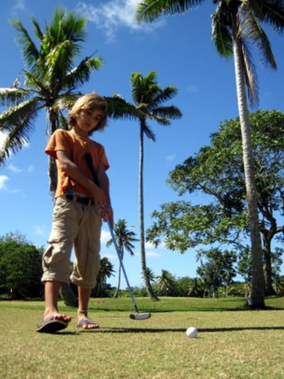
Sidney et son putter, sur le green du trou n°3.
Pendant ce temps, Cécile se faisait masser par un jeune Polynésien à la peau satinée. Le pauvre garçon, pourtant bien sympathique, a malheureusement subi un accident fatal un peu plus tard pendant son sommeil. Il dormait à côté de sa tronçonneuse qui s'est apparemment mise en marche inopinément et on l'a retrouvé dans la baie, les pieds enfoncés dans un bloc de béton. On ne masse pas ma femme impunément. Maintenant cela se sait, à Niue.
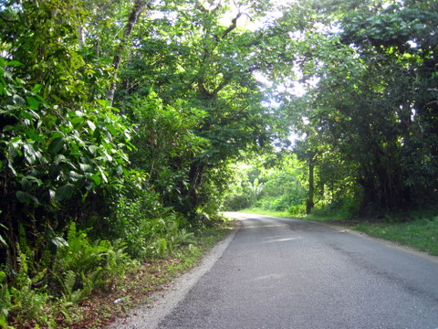
La route qui traverse l'île est assez boisée.
Après ces intermèdes sportivo-relaxants, nous nous sommes rendus au nord de l'île, pour y admirer l'arche de Noé, plus connue ici comme Talava Arch. Les photos sont, je pense, claires à ce sujet: c'est grandiose..
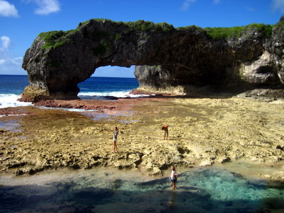
L'arche de la défense, connue aussi comme Talava Arch.
Après l'arche, nous sommes partis en direction du sud, en empruntant la côte est. Nous avons encore visité des 'sea tracks', ces petits sentiers qui mènent à la mer, ce qui nous a permis de prendre le cliché ci-après, où l'on voit très distinctement le rivage, le platier et l'océan qui se brise dessus.

Le platier.
En soirée, nous avons retrouvé une vingtaine de coloniaux, qui, comme les moutons, disposent d'un instinct grégaire à toute épreuve. Nous avons dégusté des saucisses cuites au barbecue arrosées de bière locale. Comme quoi, on ne peut pas tout avoir: les beaux paysages et la bonne bouffe, à part en Toscane, et en France, évidemment.
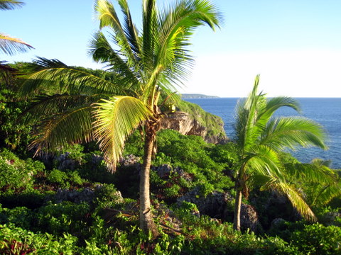
Le jardin du bar.
24 Août 2010 - Niue, visite guidée.
Cela devient une coutume: lorsque nous abordons une île perdue dans le Pacifique, bien souvent inhabitée, nous nous assurons d'abord de l'absence de cannibales. Ensuite, nous louons une voiture pour faire le tour de l'île. Niue n'a pas fait exception.
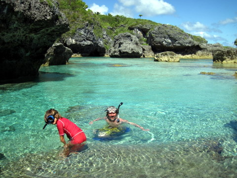
Le rivage de Niue est constellé de petites criques aux eaux claires.
Nous sommes rapidement arrivés aux 'Limu pools', appelées ainsi en raison du lieu-dit 'Limu', situé non loin de là. Nous avons plongé dans les eaux bleues et, par moment, un peu troubles. En effet, une source à proximité laisse sourdre un peu d'eau douce qui ne se mélange pas immédiatement à l'eau de mer.

Côte Est, particulièrement découpée.
Après cette petite baignade, nous avons décidé de nous rendre de l'autre côté de l'île, afin de découvrir les fameux paysages lunaires dont les prospectus nous avaient vanté la beauté. Je dois avouer que c'est spectaculaire: le chemin qui mène de la route à la mer serpente dans une forêt plantée sur le corail puis au sein de corail lui-même. Il se termine dans une petite oasis de sable fin, plantée de cocotiers, au milieu de falaises coralliennes.
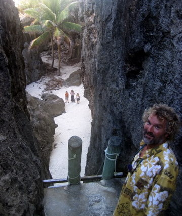
Oasis.
En fin de journée, nous sommes rentrés en 'ville', bien sagement. Une fois de plus, nous avons pu observer deux particularités locales: l'absence de cimetière et le grand nombre de maisons abandonnées. En effet, d'une part les tombes sont disséminées un peu partout sur l'île, bien souvent dans le jardin même des habitants.
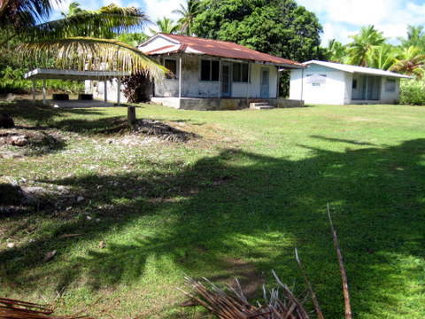
Maison abandonnée. Observez les 2 tombes dans l'abri de jardin.
D'autre part, il n'y a rien à faire sur Niue, à part glander. Certains natifs de l'île n'ont pas la force de caractère suffisante pour affronter cette vie difficile avec succès. Jouissant de la nationalité Néo-zélandaise, nombre d'entre eux répondent à l'appel de l'or qui, paraît-il, gît au fond des rivières kiwies, un peu à l'image du Pactole. Bref, ils s'en vont, laissant derrière eux maisons et, parfois, voitures et chiens. Certains villages sont carrément déserts, un peu comme dans l'ouest américain mais avec des cocotiers à la place des dunes de sable.
21 Août 2010 - Niue, oisiveté dominicale.
Chaque dimanche, à Niue, les autorités locales organisent une journée ville morte. Les Niuéens sont en effet trrrrrès croyants et se refusent à toute activité laborieuse le dimanche. Moi, pas.
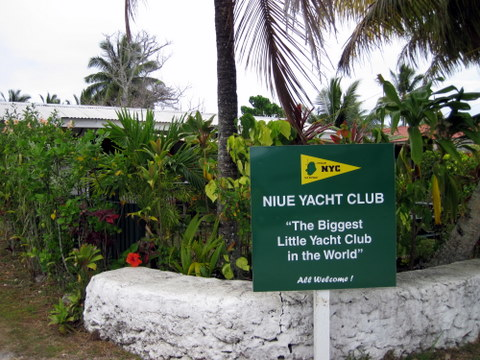
Le Yacht Club de Niue.
Vers 11 heures, je suis parti pour une petite promenade à terre, bien décidé à me rendre au restaurant à pied malgré les 10km à parcourir. Je suis passé devant le Yacht Club, devant la maison du gouvernement (le parlement ?), devant l'aéroport et même le long du terrain de golf.

Le Wash Away Bar.
En chemin, Cécile et les enfants m'ont rejoint en faisant du stop et nous sommes arrivés tous ensemble au 'Wash Away Bar', le seul restaurant de l'île ouvert le dimanche. Et encore, c'est un restaurant où il n'y a que 2 cuisinières. Pas de serveuses. On va donc soi-même derrière le bar chercher les verres et les boissons, puis l'on se sert, comme à la maison, sauf qu'on est au bord de la plage, enfin du bord de l'eau... Après le repas de midi, nous sommes retournés sur Let It Be pour une longue séance de torture mentale, organisée par Maîtresse Cécile. Au programme: mathématiques farcies et conjugaison à la française. Un régal.
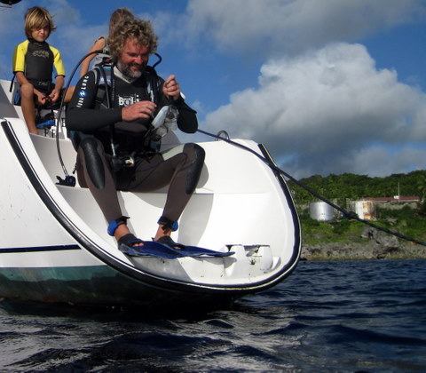
Eric s'apprête à plonger de la jupe, avec les enfants.
Après une heure de pleurs et de gémissements, j'ai pris les enfants en pitié et je leur ai proposé une petite plongée bouteille sous le bateau. Nous mouillons sur corps mort (un bloc de béton de 4T gisant au fond de la baie). En-dessous de nous, il y a d'énormes patates de corail, lézardées de failles au relief très tourmenté. J'ai d'abord lesté Sidney avant de l'emmener avec moi: j'utilise le détendeur principal et il utilise le détendeur de secours. Ainsi équipés, nous avons entamé la descente vertigineuse jusqu'au bord de la faille, à près de 13m de profondeur. Là, j'ai interrogé Sidney du regard. Il m'a dit: "OK" et nous nous sommes laissés tomber jusqu'au fond de la crevasse, par 26m de fond !!! Au retour, Sidney était super-méga-hyper content.
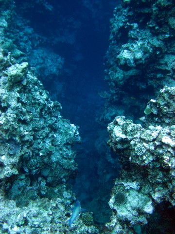
La faille.
J'ai ensuite pris Kenya avec moi, pour une petite visite guidée de la patate: nous avons trouvé du corail bleu, un très beau coquillage que j'ai pris pour examen puis redéposé, quelques poissons multicolores et même un serpent de mer, qui nous a suivi pendant quelques mètres. Kenya voulait elle aussi explorer la faille mais pas jusqu'au fond, où il faisait tout noir. On est quand même descendu à 17m. Ce fut ensuite le tour de Syr Daria. Malheureusement, elle est encore un peu petite et n'arrive pas encore à décompresser ses tympans. Cela lui fait mal aux oreilles et nous n'avons pas pu descendre plus bas que 2,5m mais ce fut quand même une bonne expérience.
21 Août 2010 - Niue, manoeuvres de port.
Je l'ai déjà dit, Niue est une énorme patate de corail, ce qui fait qu'il n'y a pas de plages. L'île est entièrement défendue par du corail et la jetée qui nous permet d'accéder à terre est construite sur le platier. En conséquence, il n'y a pas de protection contre la houle et le seul moyen de préserver notre annexe lors des visites à terre est de treuiller cette dernière et de la déposer sur le quai.
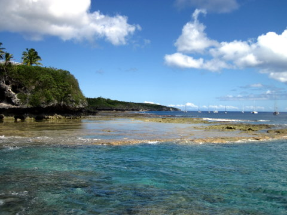
Le rivage assez abrupt avec, en avant-plan, le platier.
Chaque fois que nous allons à terre, nous devons hisser l'annexe hors de l'eau, la poser sur une plate-forme à roulettes et la ranger le long du quai, à côté des autres. Comme notre annexe pèse dans les 150 kg, la manoeuvre est un peu fatigante mais, après quelques reprises, on s'y fait. En plus, c'est l'occasion de réaliser un travail d'équipe: Sidney au treuil, Eric au transport, Cécile aux commandes et Kenya et Syr Daria à l'équilibrage aérien de l'annexe.
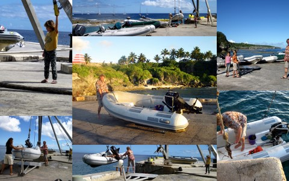
Manoeuvres d'extraction du dinghy.
En ce beau samedi d'hiver, nous avions rendez-vous avec l'ensemble des habitants de l'île dans une bourgade appelée Lakepa, sur la côte Est, soit près de 15 km à l'est du port. Nous nous y sommes rendus en faisant du stop. Sur place, nous avons pu admirer les danseurs locaux, l'artisanat du coin et déguster quelques spécialités du cru, comme le Nané, une espèce de soupe gelatineuse à la noix de coco, dont la consistance et la couleur ne sont pas sans rappeler une substance naturelle que l'on obtient en frictionnant vigoureusement... mais je m'égare. Le Nané, c'est très bon.
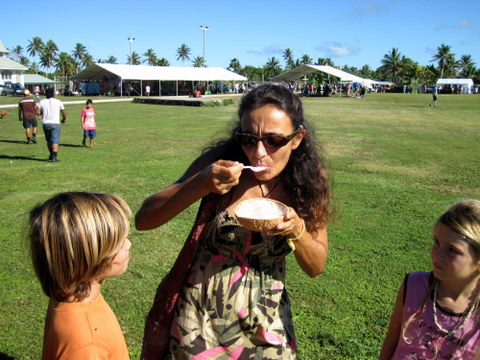
Cécile déguste le Nané.
A propos, en arrivant à Niue, nous avons retardé nos montres d'une heure, ce qui fait que nous avons maintenant un décalage de 13 heures avec l'Europe: quand il est 8h chez nous, il est 21 heures à Bruxelles. Bref, on ne pourrait pas être plus éloigné de notre mère patrie. A ce sujet, il est intéressant de noter que, quand il est 8 heures à Niue, il est également 8 heures aux Tonga mais un jour plus tard. Eh oui, à force de retarder nos horloges d'une heure tous les 15° de longitude, on finirait par se retrouver en Europe avec un jour de retard. Donc, à un moment, on 'saute' la ligne de changement de jour et, en moins d'une microseconde, on passe de J à J+1. Si on s'y prend bien, on peut même faire cela à minuit, ce qui fait qu'on ne vit pas une journée. Pour ma part, j'ai décidé que ce serait le 30 août 2010, jour que je ne verrai jamais...
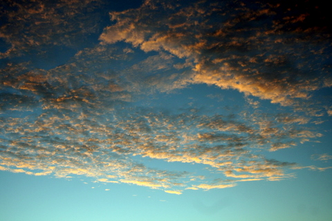
Coucher de nuages.
Comme Syr Daria est née le 2 septembre, on pourrait s'arranger pour éviter cette date, ce qui nous permettrait de ne pas faire de cadeaux et d'économiser ainsi plein d'euros. Mais ce ne serait pas très sympa !!
17 Août 2010 - Beveridge Reef, plongée bouteille.
C'est bien beau d'être dans un atoll perdu au milieu du Pacifique mais encore faut-il y faire quelque chose. En effet, l'absence de restaurant, de maison, de colline, de supermarché, voire même d'habitant réduit considérablement notre champ d'activités potentielles. Il est toutefois un divertissement qui a fait ses preuves auprès des navigateurs de tous temps: la dégustation de rhum sur le pont. Hélas, cette activité ne peut se pratiquer trop longtemps, sous peine de momification.
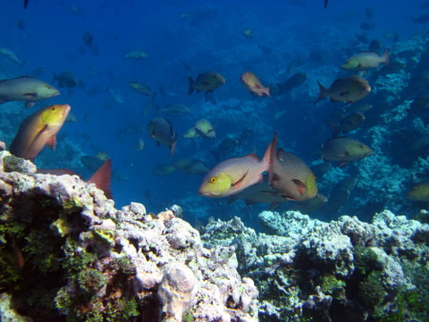
Notre spot de plongée.
Nous avions donc décidé de sortir de l'atoll en catimini, à l'insu de la marée, afin de plonger dans les eaux bleues remplies de poissons. Nous avions pris notre matériel de plongée bouteille, bien décidés à nous en payer une bonne tranche.
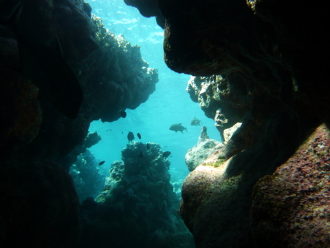
Tunnel en dessous du corail.
La barrière de corail, épaisse d'une dizaine de mètres, est creusée de ravins et tranchées qui offrent un terrain d'exploration fantastique. Il y a des passages secrets entre chaque patate, ce qui permet de se faufiler dans un labyrinthe multicolore, sans jamais descendre à plus de 10m.
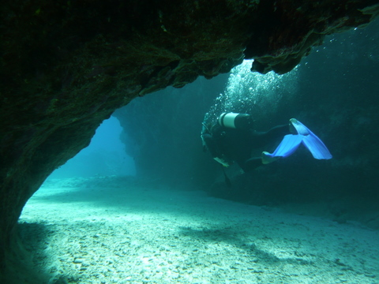
Cécile se faufile dans une faille.
Avec Cécile et les carangues, on a joué au chat et à la souris. Nous avons même réveillé quelques requins gris tapis au fond d'une crevasse et qui quittèrent leur lieu de sieste en maugréant.
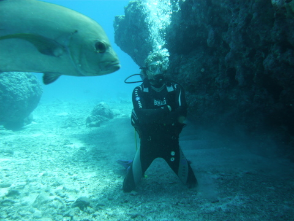
Eric attaqué par une carangue géante.
Au détour d'un corail, j'ai eu la surprise de voir fondre sur moi une carangue mutante, sans doute envoyée pour me faire payer toutes ses consoeurs que j'ai embrochées depuis un an. Tandis qu'elle approchait, prête à me gober tel un asticot, j'évaluai sa taille: 5m22, environ. Malgré tout, je suis resté calme et serein, à l'image de Yoda dans Star Wars II. Faisant appel à la Force, j'ai créé une distorsion dans le continuum spatio-temporel, ce qui a eu pour effet de redonner à la carangue sa taille habituelle, insuffisante pour prétendre avaler un être tel que moi, surtout avec son scaphandre et sa bouteille. Ensuite j'ai essayé de l'attraper à mains nues mais ça n'a pas marché, sans doute du fait de la présence de la caméra.
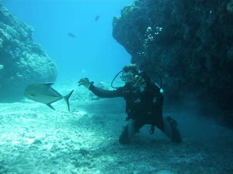
La carangue retrouve sa taille normale.
16 Août 2010 - Beveridge Reef, invraisemblabilité.
L'inconvénient des atolls immergés, c'est qu'on ne peut pas faire de ballade à terre. C'est bien simple, il n'y a pas un seul arbre qui pousse les pieds dans l'eau. Par contre, l'absence de végétation permet à l'eau d'être d'une clarté surnaturelle.
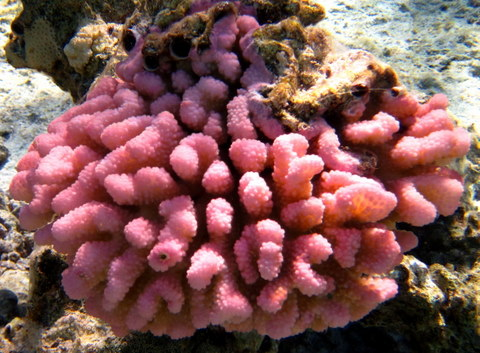
Corail.
Je vous assure que c'est vraiment extraordinaire: on se croirait dans un aquarium géant. D'habitude, les eaux claires sont localisées en certains endroits, à proximité des passes mais ici, c'est tout l'atoll qui est transparent.
On pensait ne rester que 2 jours mais les snorkeling sont tellement impressionnants qu'on va rester quelques jours de plus. D'autant que l'on ne peut plonger qu'à l'étal de marée basse. En dehors de ces heures, la mer passe par dessus le corail et le courant est tel qu'il est impossible de nager, même avec palmes et tubas.
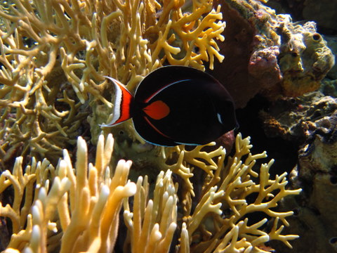
Poisson.
En outre, l'absence d'habitants permet à la faune sous-marine d'évoluer librement, ce qui m'a permis, non seulement d'observer des perroquets, chirurgiens et autres carangues de taille inhabituelle, mais, également, de réaliser quelques belles prises avec mon harpon.
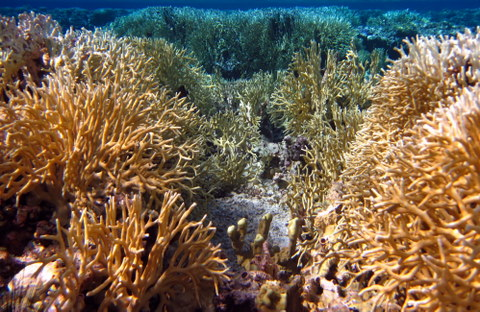
Corail.
J'ai aussi eu la trouille de ma vie: j'avais flèché une carangue de 2 kg et je me réjouissais déjà à l'idée de la déguster. Hélas, à peine 3 secondes après avoir embroché ma proie, je vis un requin s'approcher
et manger ma prise. En 2 coups de mâchoire, ce gredin a avalé toute la carangue et sectionné mon fil. J'ai à peine eu le temps de voir ma flèche sombrer que ce carnassier redoutable s'est retourné vers moi, alors que, tout autour de nous, les autres poissons se regroupaient, un peu comme les spectateurs se disposent autour du ring avant un combat à mort.
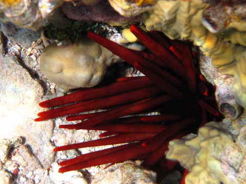
Oursin.
Inutile de préciser qu'en voyant le requin me foncer dessus, je ne pouvais m'empêcher de résoudre l'une ou l'autre équation aux dérivées partielles. Heureusement, non seulement le requin était petit et impressionné par mon aisance aquatique mais Cécile était juste au dessus de moi avec le dinghy, ce qui m'a permis de réaliser une cascade digne de Rambo: le-sautage-hors-de-l'eau-en-moins-d'une-seconde-quand-on-est-poursuivi-par-un-requin. Bref, il faut raison garder et prudence observer. Et, dans certains cas, carangue pas manger.
Enfin, dès que j'eus recouvré mes esprits, je suis retourné dans l'eau, non pas pour me faire le requin avec du gravier, mais pour récupérer ma flèche qui gisait par 9.1m de fond (c'est mon ordinateur de plongée qui l'a dit).
10 au 13 Août 2010 - Traversée de Rarotonga vers Beveridge Reef.
Au début, la traversée s'annonçait paisible. Partis avec un petit vent qui nous poussait gentiment, nous devisions gaiement dans le cockipt, en pêchant nonchalemment un Mahi Mahi.
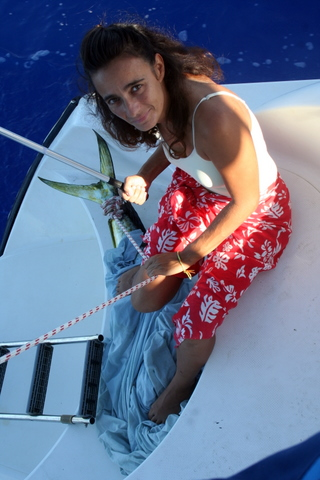
Nouvelle technique pour ramener le poisson: on l'emballe et on marche dessus.
Vous remarquerez, sur la photo, qu'après avoir perdu nos trois dernières prises, nous avons perfectionné notre technique. Lorsque vous ferrez une dorade, elle se débat assez énergiquement mais, tant qu'elle est dans l'eau, tractée par le bateau, elle ne peut guère s'échapper. Par contre, lorsque vient le moment de la hisser sur le pont, elle fait alors des bonds prodigieux en s'appuyant sur le plat-bord. Résultat: elle se libère et s'enfuit en riant. Ayant pris renseignements auprès de divers pêcheurs, nous avons trouvé la parade: dès que la dorade est sur la jupe, je me jette dessus et l'emballe pendant que Cécile lui ficelle la queue. Dans le noir, elle se calme aussitôt. Ensuite, on la maintient fermement en marchant dessus, jusqu'à ce qu'elle meure (car on n'arrive pas à lui enfoncer un stilet dans le cerveau, comme le préconisent les pêcheurs).
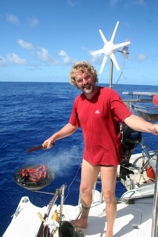
Les merguez grillées en traversée: un must.
La pêche nous ayant ouvert l'appétit, nous avons préparé nos merguez au BBQ (puisque, comme chacun sait, il faut laisser le poisson reposer 24h avant de le manger). La journée s'est déroulée sans souci et, le soir venu, nous avons pris nos quarts: moi celui de 20h à 3h et Cécile de 3h à 10h.
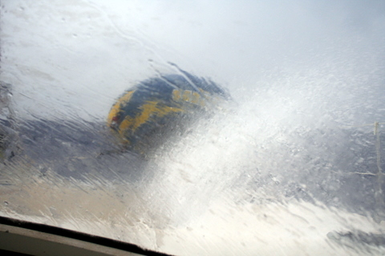
On n'osait pas sortir pour prendre des photos.
Vers 1h30, le vent s'est levé, doucement. Vers 8h, il a commencé à pleuvoir et vers midi, il y avait 30 noeuds établis, des embruns, de la pluie, des vagues et plus de soleil. Pendant près de 12 heures, il a plu sans discontinuer et le vent s'est maintenu. La mer, de plus en plus forte, a d'abord eu raison de Kenya, puis de Cécile. Vers 19 heures, Sidney, à son tour, déclarait forfait et allait se coucher, sans être malade toutefois. Ensuite, je ne me souviens plus très bien: le bateau bougeait dans tous les sens, la mer faisait un bruit impressionnant et le vent sifflait dangereusement. Ayant pris un 3ème ris pour la nuit, j'observais le comportement du bateau, assis au poste de pilotage. Vers 3 heures, Cécile ressurgit d'entre les morts et me relaya aux commandes du bateau qui crapahutait sur la mer à quelques 8 noeuds de moyenne.
A midi, heure à laquelle j'écris ces lignes, le soleil est de retour mais le vent s'acharne autour des 25 noeuds avec des rafales à 35. Tous le monde est debout, sauf Kenya, évidemment. La mer continue à creuser (5 à 6m, à vue de nez) et, aussi loin que je me souvienne, je ne me rappelle pas avoir eu de traversée aussi mouvementée. C'est bien simple, avec 3 ris dans la grand'voile et 1/4 de génois, on file encore à plus de 7 noeuds, dans un bruit assourdissant.
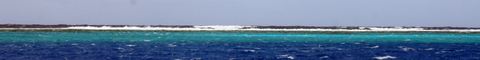
La barrière de corail.
Enfin, à 10 heures, vendredi 13 août, un chat noir est passé sous une échelle, et, tandis qu'un miroir se fracassait au loin, LET IT BE pénétrait dans le lagon propulsé par la pleine puissance de ses deux moteurs qui, malgré leur courage, suffisaient à peine à vaincre les 30 noeuds de vent. Mais tout est bien qui finit bien: nous sommes ancrés et nous savourons un carpaccio de Mahi Mahi à l'huile de truffes en discutant du bon vieux temps.
6 Août 2010 - Iles Cook - Rarotonga, traversée.
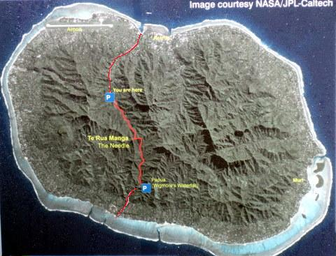
Itinéraire de la journée (ne vous fiez pas aux P de parking, nous, on est parti du port et on est arrivé à la plage).
La promenade du jour nous emmenait du Nord au Sud de Rarotonga, en passant par le centre et non par les côtés (car, comme le dit Cécile à Kenya, c'est la différence entre le diamètre et la circonférence). Au total, cela fait 10 km de marche et 500m de dénivelé. Piece of cake pour des gens surentraînés. Mais pas pour nous car on ne peut pas tout avoir: le pied marin et la tête dans les nuages.

Petit meli-melo de paysages.
Je ne vais pas vous décrire pour la énième fois comment nous avons dû faire face aux dangers innombrables qui parsèment la forêt tropicale. Je ne vous parlerai pas des pentes abruptes, couvertes de glace, que nous avons dû gravir afin d'arriver au sommet. Je ne vous dirai pas non plus que nous avons traversé maintes fois des torrents tumultueux, parfois suspendus à des lianes à la solidité douteuse. Cette fois, j'ai préféré laisser parler les images, en particulier ce cliché de Cécile, en plein effort, dans l'ascension d'une paroi verticale de plus de 100m, sans aucune prise. Incredibeul.
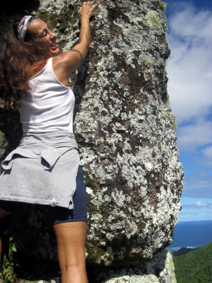
Cécile a juré de grimper au sommet.
Ce que je vous confirme, par contre, c'est que nous sommes arrivés sains et saufs sur la plage sud de l'île et que la ballade fut magnifique tant par la beauté des paysages que par l'agréable compagnie de nos amis Markus et Tina ainsi que Jefferson et Anna Luisa.
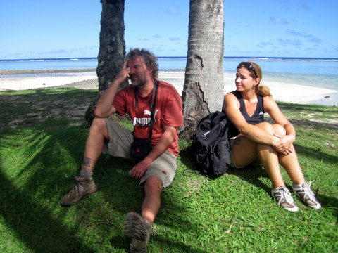
Les promenades finissent toujours à la plage.
5 Août 2010 - Iles Cook - Rarotonga, marché.
Juste à côté du port de Rarotonga, il y a un petit marché que l'on peut visiter chaque jour mais qui s'anime vraiment le samedi matin.
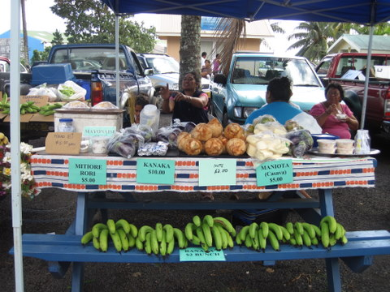
On a vraiment le choix: du MITIORE RORI, du KANAKA, sans oublier le MANIOTA, aussi connu comme CASAVA.
Comme en témoigne la photo ci-dessus, on trouve vraiment de tout à Rarotonga, pour autant qu'on maîtrise un peu les habitudes locales, évidemment. Malgré nos efforts, nous ne savons toujours pas ce qu'est le KANAKA mais, a priori, on peut supposer qu'ayant atteint notre grand âge sans cette mystérieuse substance, nous allons pouvoir survivre encore quelques années en son absence...

Incroyable: on peut même manger des gauf' de Liééch.
Outre les échoppes des maraîchers, on trouve aussi de nombreuses tentes à frites, sauf que les frites sont ici des burgers et des brochettes ou des sucreries diverses. Les habitants des Cook entretiennent leurs formes arrondies avec une rigueur qui force l'admiration.
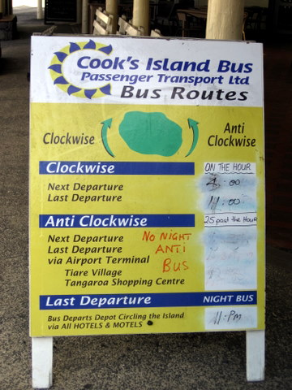
La STUR offre vraiment toutes les destinations carrossables de l'île.
Autre curiosité de Rarotonga: la STUR, Société de Transport Urbain de Rarotonga. Il n'y a qu'une route à Rarotonga: celle qui fait le tour de l'île. Le principe astucieux imaginé par les administrateurs locaux est le suivant: Il y a donc 2 lignes de bus: dans le sens des aiguilles d'une montre et dans l'autre. A vous de choisir. Un trajet coûté 4$, quelle que soit la destination. Il n'y a pas d'arrêt prédéfini: vous attendez au bord de la route que le bus arrive, vous faites signe, où que vous soyez, le bus s'arrête, vous montez dedans et vous faites signe quand vous voulez descendre.
3 Août 2010 - Iles Cook - Rarotonga, danses.
Depuis quelques jours, chaque soir, nous allons à l'auditorium de Rarotonga pour assister aux spectacles de danse. Hélas, il nous est interdit de prendre des photos ou de faire des films. Dans ces conditions, je ne puis illustrer mes propos et cela me coupe l'inspiration. Nous avons cependant réussi à prendre un cliché rare, au péril de nos vies.
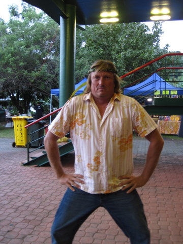
Danseur local.
Heureusement, à Rarotonga, pendant la journée, nous pouvons profiter de la nature pour visiter l'île et prendre toutes les photos qu'on veut. Je peux donc vous entretenir pendant des heures des cocotiers, arbres du voyageur et autres ligneux. Justement, Cécile a profité de la journée un peu couverte pour se rendre au jardin tropical, de l'autre côté de l'île.
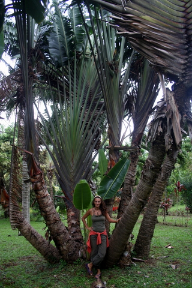
Cécile et le bosquet du voyageur.
Le jardin tropical de Rarotonga regorge d'essences rares et de fleurs tropicales (d'où son nom) mais uniquement en été, c'est-à-dire vers janvier/février, c'est-à-dire pas maintenant. Il reste néanmoins quelques curiosités du cru à observer, tels ces bosquets d'arbres du voyageur.
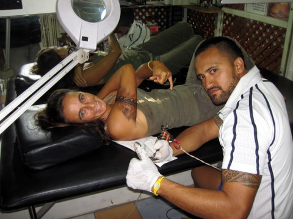
Cécile et son tortionnaire.
Comme on prend vite goût aux bonnes choses de la vie, surtout Cécile dont la faiblesse de caractère n'échappe à quiconque la connaît un peu, il est difficile de ne pas retomber quand on a versé dans le tatouage dur. J'ai donc dû quadriller Rarotonga pour retrouver Cécile, alitée, dans les mains d'un malade mental qui lui gravait des insanités sur le corps. J'ai vertement tancé le malotru avant de succomber moi-même à son envoutement maléfique. Mais je garde la surprise pour un autre post...
Euh, Thalou...je suis désolé mais ta fille est incontrôlable. Si on continue à voyager quelques années, elle reviendra couverte de motifs harmonieux, certes, mais indélébiles quand même.
31 Juillet 2010 - Iles Cook - Rarotonga, début des festivités.
C'est aujourd'hui que débutent les festivités célébrant le 45ème anniversaire de l'indépendance des îles Cook (pas tout-à-fait puisqu'elles font partie de la Nlle Zélande mais elles ont un certain pouvoir d'autogestion).
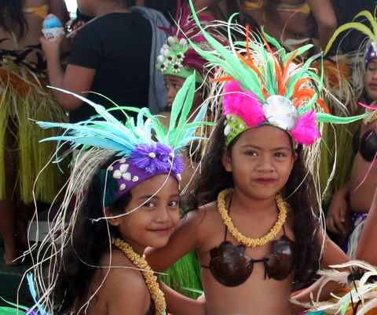
Les petits rats locaux.
Le marché local servait de point de ralliement pour l'ouverture des cérémonies. Nous nous y sommes rendus comme beaucoup de touristes et d'autochtones, ce qui nous a permis d'assister à quelques pas de danse effectués par de très jeunes ballerines. Entre deux échoppes aux senteurs très américaines, nous avons trouvé le vendeur de billets pour la cérémonie du soir. En effet, pendant une semaine, chaque soir, des groupes de danseurs, chanteurs et percussionnistes vont se succéder dans le grand auditorium devant un parterre de juges de haute volée afin de déterminer les meilleurs d'entre eux. Inutile de préciser que Cécile assistera à toutes les sessions. Quant à moi et les enfants, nous ne disposons pas d'une telle vigueur et il nous faut nous reposer de temps en temps. Quoi qu'il en soit, je vous tiendrai au courant même si, à ma grande surprise, il est interdit de filmer ou prendre des photos dans l'auditoire.
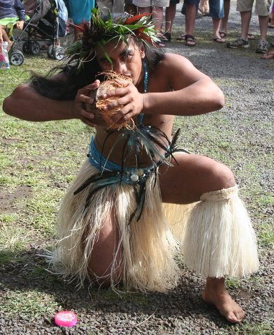
Le guerrier débourbe la coco avec les dents.
Un peu plus tard, nous avons vu arriver dans le port 2 embarcations assez insolites: d'une part un grand monocoque en aluminium que nous avions déjà vu à Fatuhiva en décembre et, d'autre part, un prao au gréement original. Pendant que le monocoque tournait en rond dans le port en se demandant où amarrer et en appelant le capitaine du port sans aucun succès, le petit prao prenait le chemin du port des pêcheurs où l'attendaient une cinquantaine de personnes très motivées.
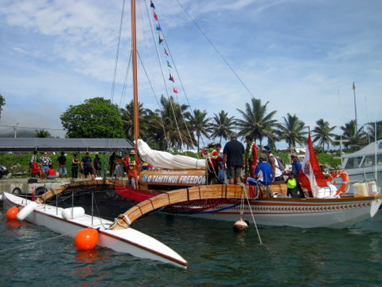
Le prao en provenance de Tahiti.
Le contraste entre le pauvre bateau européen faisant des ronds dans l'eau et le prao tahitien (nous l'avons appris plus tard) était vraiment saisissant. En entendant les percussions sur le quai, nous avons sauté dans le dinghy pour aller voir ce qui se passait. Comme quelques autres badauds, nous avons assisté aux souhaits de cordiale bienvenue de la part des Cookien aux Tahitiens. Je dois dire qu'ils savent y faire: avant d'avoir mis pied à terre, les Tahitiens furent accueillis par des grondements de tambours, suivi d'un discours très engagé auquel nous n'avons malheureusement rien compris mais qui, de toute évidence, était un vibrant hommage aux voyageurs venus d'au-delà des océans (Tahiti est à 400 nm à l'est de Rarotonga).
Le capitaine du bateau écouta sans broncher le discours de bienvenue puis, grimpant sur la proue de sa goélette, entama lui aussi un discours plein de verve mais tout aussi incompréhensible. Ensuite, le capitaine et son équipage descendirent de leur embarcation pour recevoir le collier de fleurs, les fruits ainsi que l'accolade des insulaires. Ce n'était pas encore fini. En effet, une fanfare polyphonique nous gratifia de quelques beaux morceaux du répertoire local. Pour terminer, la délégation tahitienne et les officiels locaux échangèrent des cadeaux et quelques bonnes paroles, avant de se quitter.
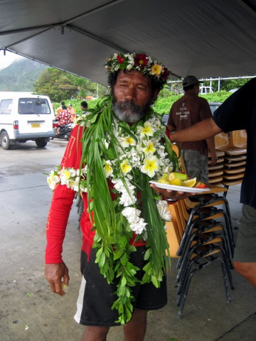
Le navigateur du prao.
30 Juillet 2010 - Iles Cook - Rarotonga, le tour.
Ce matin, nous avons loué une voiture familiale pour faire le tour de l'île, soit environ 32 km. Comme je me sens un peu fatigué après cette journée, j'ai décidé de laisser parler les images.
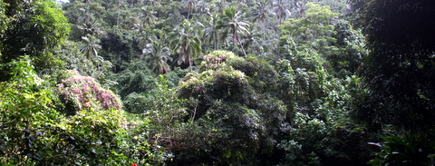
L'île est très densément arborée.
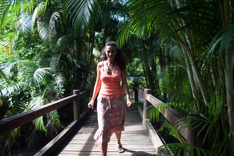
Cécile marche.
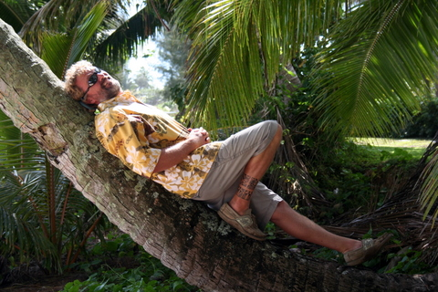
Eric se repose.
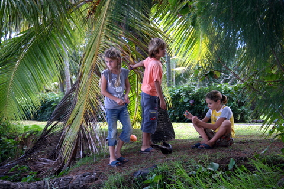
Les enfants jouent.
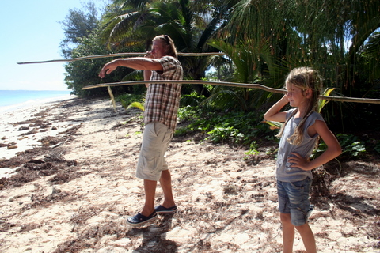
Markus et Syr Daria lancent le javelot.
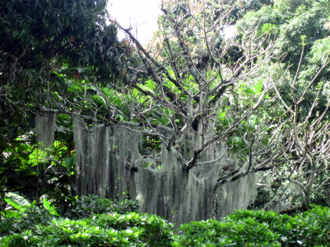
Les arbres poussent.
En revenant au port, nous avons constaté que le vent forcissait doucement, comme prévu. Nous subissons maintenant des rafales à près de 30 noeuds, perpendiculairement au bateau (dont on ne peut guère modifier la position puisque le quai est relativement bien attaché à la terre, lui aussi). En conséquence, nous sommes secoués dans un bruit d'amarres qui se tendent en crissant, ce qui nous promet une nuit agitée.
29 Juillet 2010 - Iles Cook - Rarotonga, le port.
Un petit post tout court, pour vous faire découvrir le port d'Avatiu.
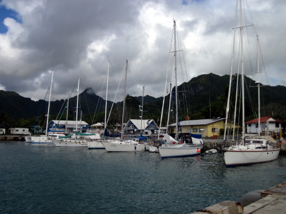
Le quai des voiliers.
Il n'y avait plus de place sur le quai des voiliers, aussi avons-nous dû nous mettre loin des autres bateaux, à l'extrémité du quai des douanes. Nous avons passé près de 3 heures à essayer de placer Let It Be aussi bien que possible.
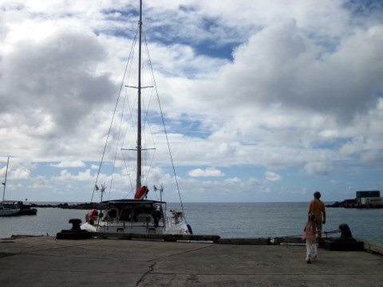
Let It Be, face à l'entrée du port.
Comme nous sommes au bout du quai, nous n'avons que peu d'espace entre nos amarres, ce qui fait que, par vent de travers, nous sommes déportés vers la plage.
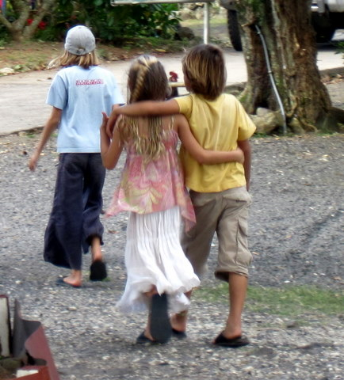
Sidney et Syr Daria visitent le marché.
Nous avons également fait un petit tour au marché (fermé en ce jour) pour déjeuner dans une roulotte et faire couvrir l'un ou l'autre coussin avec des tissus locaux pour rendre notre petit nid encore plus douillet. Merci Cécile !
28 Juillet 2010 - Iles Cook - Rarotonga, découverte.
Rarotonga se est une île entourée d'un récif fringeant, c'est-à-dire "collé" à la terre: il n'existe pas de voie navigable entre le récif et la terre ferme car, tout autour de l'île, il n'y a qu'une bande de 200m de large de très faible profondeur et parsemée de rochers et patates de corail.
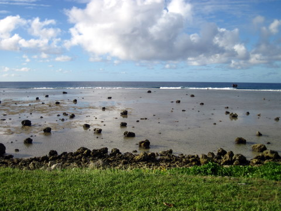
L'océan au loin et, à l'avant plan, le récif fringeant.
Ce récif a été dynamité en un point pour permettre la construction du port d'Avatiu, unique mouillage possible de l'île. Nous sommes donc 8 bateaux amarrés en rangs d'oignons à la Tahitienne (à savoir une ancre à l'avant et des aussières à l'arrière pour nous maintenir à quai). Une fois amarrés, nous faisons face au Nord, face à l'océan, sans grande protection des vents septentrionaux, ce qui n'est pas grave puisqu'en général, les alizés soufflent de secteur Est (enfin, selon la météo, nous allons avoir une renverse spectaculaire d'ici 4 jours, avec des vents soufflant du Nord à plus de 30 noeuds, ça va être rock'n roll).
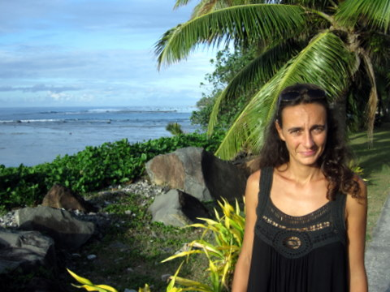
Cécile se promène sur la digue.
Nous sommes partis faire une petite promenade le long de la digue vers le centre ville, ce qui nous a permis de ressentir immédiatement la culture anglo-saxonne et le contraste avec la Polynésie française est assez frappant.
Comme souvent, les bords de l'île sont urbanisés tandis que le centre reste sauvage.
Apparemment, le sponsoring d'état est nettement moindre ici et les initiatives privées pour développer le tourisme (nous sommes à 4 heures d'avion de la Nouvelle Zélande) font de Rarotonga un endroit assez sympathique.
24 Juillet 2010 - Iles Cook - Aitutaki, promenade dans le lagon.
En ce jour, nous avions décidé de visiter le lagon dont la particularité, à l'image de Bora Bora, est d'être peu profond, ce qui offre une palette de bleus exceptionnelle.
Le fond en verre permet de voir dans l'eau sans se mouiller.
La faible profondeur du lagon nous empêche de le pratiquer en cata, ce qui nous a fait opter pour une ballade en bateau à fond de verre.
Un poisson Picasso.
Vers 10 heures, nous avons embarqué en compagnie d'une famille néo-zélandaise. Nous avons d'abord survolé les tortues avant de nous rendre aux fermes de bénitiers géants. Je dois reconnaître que ces coquillages gigantesques sont assez impressionnants même si, malheureusement pour eux, les habitants des îles Cook ont massacré leur propre cheptel depuis bien longtemps: l'élevage actuel se fait avec des animaux importés de Palau et Australie. Pour ceux qui se demandent ce qu'on peut bien faire avec ces trucs, voici la réponse de notre guide: on les exporte pour peupler les aquariums du monde entier, des plus petits aux plus grands.
Sidney à côté d'un de ces coquillages géants.
Après ce petit snorkeling, nous avons profité de l'arrière saison pour manger un trio de poissons à bord du bateau, avant de rejoindre Honey Moon island, ainsi nommée à cause des lunes de miel qui vont très bien avec le sable blanc... Qui l'eût cru ?
Au fin fond du lagon, sur une île inhabitée...
Les îles du sud du lagon sont pour la plupart inhabitées, vraisemblablement du fait des paysages maussades et du sable trop clair qui éblouit les yeux. Mais bon, en tant qu'invités, nous sommes tenus à un peu de retenue et nous devons parfois prendre un peu sur nous quand les conditions sont difficiles.
Belle plage.
Dès demain nous partons vers Rarotonga, capitale flamboyante des îles Cook, afin d'assister au Te Maeva Nui. Je ne vous en dis pas plus pour l'instant pour préserver le suspens... mais ça va être génial et, probablement, des dizaines de vahinés élancées au regard de braise viendront se frotter langoureusement contre mon corps musclé afin de me faire partager avec elles un moment de jouïssance intense. Enfin, si Cécile est d'accord...
22 Juillet 2010 - Iles Cook - Aitutaki, promenade en scouteur.
Comme annoncé, nous avons loué 2 scouteurs et profité de la présence de Markus et Tina (et de leurs 2 scooters) pour leur fourguer un de nos bambins, avant de partir sur les routes de l'île. J'ai pris Sidney 'à cul', tandis que Kenya rejoignait Cécile et Syr Daria, heureuse comme jamais, se mettait derrière son grand copain Markus.
La troupe au grand complet, à l'heure du départ.
Nous avons sillonné l'arrière-pays Aitutakiesque à la recherche des plus beaux paysages et des meilleurs points de vue, sans oublier les meilleurs bars, bien entendu. Il faut avouer que l'île offre une grande variété de paysages et, comme d'habitude en Polynésie, les jardins sont toujours très fleuris et bien entretenus. On a même visité le golf de l'île...

Florilège de paysages, dont le Banian que la route traverse et le départ du trou n°1.
Nous avons parcouru quelques dizaines de km, allant du nord au sud et du point culminant jusqu'à la plage. Nous avons même cueilli quelques papayes vertes dans un Marae (vestiges laissés par les anciennes populations). Disposant de quatre machines identiques, il était parfois difficile de s'y retrouver, surtout pour Markus. Heureusement, Syr Daria veillait au grain et, grâce à son oeil de lynx, Markus put chaque fois retrouver son engin.
Syr Daria confirme à Markus que c'est bien son scooter.
Le soir venu, nous avions rendez-vous au Tamanu's Bar, pour manger un buffet froid de très bonne facture et suivre émerveillés l'évolution des danseurs locaux. Comme je crois l'avoir déjà dit, la danse est l'une des spécialités des îles Cook et on est venu ici avec l'intention louable d'assister à un maximum de spectacles.

Spectacle Cookien.
Le clou du spectacle fut l'apparition d'un robuste jeune homme, muni de deux batons de feu, qui les fit virevolter sous nos yeux ébahis, au rythme saccadé des tambours africains (c'est pas vrai, ils n'étaient pas africains, les tambours, mais je trouvais que ça faisait bien dans la phrase).
La danse du feu sur la plage.
21 Juillet 2010 - Iles Cook - Aitutaki, premier contact.
Le moins que l'on puisse dire, c'est que le 'port' d'Aytutaki n'offre que peu de place aux voiliers de passage. Avec trois catamarans et deux monocoques, on se marche déjà sur les ancres. Ce matin, Bubas s'en est allé et nous en avons profité pour prendre sa place et quitter Blue Callaloo. Nous avons amarré notre bateau aux cocotiers avant de descendre à terre pour faire une petite inspection des lieux.
Let It Be dans son petit coin.
Nous sommes donc partis à l'aventure, sur les routes de cet atoll inconnu qui, dans sa longueur, mesure plus de 5km. Nos pas nous ont mené au sommet de l'île, culminant à quelques 44m, altitude à laquelle nous, marins, ne sommes guère habitués. Etourdis par les bourrasques, nous sommes précipitamment redescendus vers notre mouillage, non sans avoir croisé de nombreux autochtones hilares, perchés sur leur mobylette - l'hilarité permanente et le perchage sur mobylette étant en effet deux signes distinctifs qui permettent de discerner à coup sûr un habitant des îles Cook d'un Ouzbèque.
Les enfants sur le chemin de la route.
Après notre petite promenade, nous avions décidé d'aller louer des scooters (pour passer inaperçus) afin d'entreprendre, dès demain, un méthodique tour de l'île. Nous avons fait du stop pour parvenir au loueur d'engins motorisés à deux roues mais, à notre grand regret, après une heure d'efforts insensés, nous n'avions parcouru que 3 des 5 km qui nous séparaient du magasin et, le soir tombant et les enfants étant livrés à eux-mêmes sur le bateau, nous décidâmes de rebrousser chemin.
Les palmiers dans le soleil couchant, un classique dont on ne se lasse.
Enfin, demain nous remettons le couvert de bonne heure et nulle doute que nous arriverons cette fois jusqu'à Papaoera, lieu de prédilection pour les loueurs de scooters... De plus, notre retour anticipé nous a permis d'assister au départ de Bubbles, petit monocoque américain occupé par 3 gamins très sympathiques qui, non contents de s'être échoués dans la passe en entrant pour cause de tirant d'eau trop grand ou de marée trop basse, se replantèrent en sortant, au même endroit et pour les mêmes raisons.
19 Juillet 2010 - Iles Cook - Aitutaki
Après 3 jours d'une traversée marquée par un vent portant décroissant et une houle de SE, nous sommes arrivés aux Iles Cook du sud, à Aytutaki, ce lundi. La croisière fut calme et agréable, ce qui a permis à Cécile de réaliser une coiffure africaine à Syr Daria, laquelle, après 3 heures de supplice, ne souhaitait qu'une chose: fuir sur son cheval, en canardant les occupants du bateau.
Calamity Syr Daria tente de s'échapper à cheval.
Cela ne nous a pas empêchés d'arriver à bon port, en tous cas, 'face' au bon port. En effet, l'île d'Aytutaki est entièrement défendue par une barrière de corail, à l'exception d'une passe étroite, longue et peu profonde. Comme, de surcroit, la cartographie est imprécise, nous n'en trouvions même pas l'entrée (dont la signalisation a été balayée par Olie, le cyclone de janvier 2010).
L'énorme Blue Callaloo et le très beau Let It Be, à couple.
Nous nous apprêtions donc jeter l'ancre hors du lagon quand nous aperçûmes Markus et Tina arrivant à notre rencontre sur leur dinghy. Ils nous guidèrent au travers de la passe jusqu'à leur bateau, ancré dans le port. Je ne saurais trop les remercier car, sans indications, le passage n'est pas aisé et la faible profondeur de la passe (1.6m à certains endroits) fait craindre l'échouage à celui qui l'emprunte. En outre, comme il n'y a de place que pour 4 bateaux au mouillage dans le port et que le reste du lagon est impraticable, nous nous sommes mis à couple avec Blue Callaloo, c'est-à-dire côte-à-côte, attachés l'un à l'autre.
Notre premier restaurant aux Cook.
Normalement, les douanes, l'immigration et les autorités sanitaires doivent visiter le bateau avant que l'on puisse descendre à terre mais, en l'occurrence, ils ne semblent pas trop pressés, ce qui nous a incité à aller faire un tour et manger un petit Fish'n Chips couleur locale qui, sans être d'une grande finesse, fut néanmoins très roboratif. D'emblée, on peut déjà affirmer que nos haltes gastronomiques, un instant suspendues pour cause d'exhorbitance des prix en Polynésie française, vont désormais reprendre de plus belle. Un petit tour au 'supermarché' du coin nous a d'ailleurs confirmé qu'ici les prix redeviennent abordables: 1.2€ le litre et demi de Coke, contre 4€ aux Gambier. Et encore, Aytutaki n'est pas vraiment un carrefour commercial international, voire local.